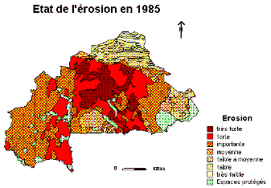
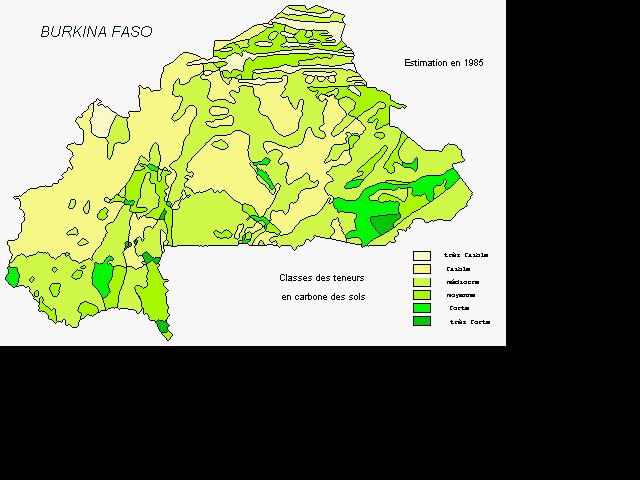

|
BurkinaIndices de qualité des terres au Burkina FasoSerge Guillobez 
Le suivi de la qualité des terres correpond à une demande de décideurs désireux de connaître l'évolution temporelle du milieu agricole et particulièrement de ses composantes environnementales. La perte en terre, la baisse de fertilité des sols, leur dégradation tant physique que chimique, le stock de carbone font partie des grands problèmes actuels. Ces thèmes concernent de nombreux pays de l'Afrique sud saharienne et particulièrement le Burkina Faso, pays enclavé aux conditions climatiques difficiles; ce suivi nécessite l'établissement d'indices spécifiques. La démarche utilisée vise à modéliser de façon spatiale ces indices ; cela nécessite des fonds de cartes très variés et des données sur le milieu physique et le milieu humain au niveau de l'ensemble du territoire Burkinabè. Ceci est réalisable à l'aide de logiciels de type systèmes d'information géographique (SIG). Néanmoins, la nouvelle version de Cormas a été utilisée. Elle permet non seulement de travailler en mode vectoriel à partir des fichiers "exports" de MAPINFO mais aussi de disposer de possibilités de modélisation bien supérieures à celles des SIG. Un premier travail a été réalisé sous le logiciel de SIG, sur le thème de suivi de l'érosion pluviale et hydrique au Burkina Faso, il a été transposé aisément sous Cormas. Une simulation dans le temps basée sur l'évolution théorique de la population et du cheptel fonctionne. Elle permet de tester les paramètres pris en compte.  Un couplage Sig-données-SmaLa version en cours de développement vise à utiliser un couplage Sig-données-Sma. Le Sig (MapInfo) fournit la base cartographique. Elle est constituée d'une seule couche dont les polygones élémentaires sont appelés "chorels", il s'agit de zones équiproblématiques, présentant des caractéristiques identiques en ce qui concerne le milieu agricole burkinabé en matière de sols, de conditions climatiques... et de découpages administratifs. Les attributs du Sig renseignent ces caractéristiques primaires. En rapport avec ces caractéristiques primaires, des bases de données spéciales possèdent le même identifiant que l'attribut du Sig, apportent des informations plus complètes en matière de sols et de statistiques agricoles au niveau administratif. La modélisation dans un premier temps porte sur le thème érosion ; l'aspect stock de carbone est en cours. Une première maquette est présentée. Le Sma assure l'accès aux fichiers du Sig, à ceux des bases de données, effectue le calcul de nouvel indice et affiche le résultat spatialement dans la fenêtre "point de vue". Dans le futur il est envisagé son utilisation comme outil d'aide à la décision, les acteurs (agents) étant, à ce niveau de perception, les décideurs et les organismes de développement.  Référence bibliographiqueSerge Guillobez, François Lompo, Georges de Noni. Le suivi de l'érosion pluviale et hydrique au Burkina Faso : utilisation d'un modèle cartographique. Science et changements planétaires / Sécheresse. Vol. 11, Numéro 3, septembre 2000 : 163. Pour en savoir plus, vous pouvez contacter l'auteur. |